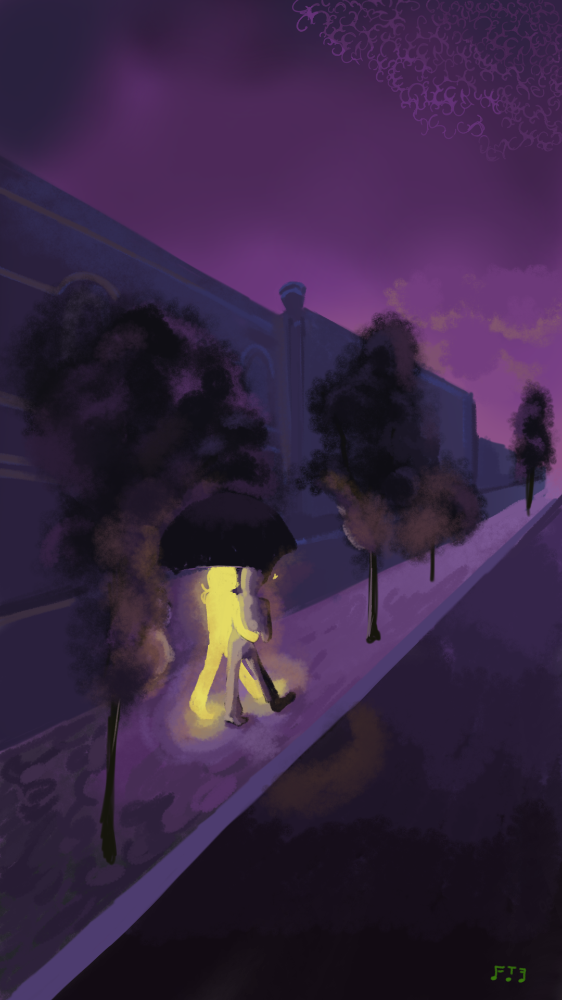

Meu amor, aqui está o seu prêmio da primeira carta, mas o terceiro enigma ainda precisa ser descoberto. Por favor, chegando nesse ponto, me avise para eu poder te entregar a segunda. Essa aventura não acaba agora, assim como meu amor por você rs
Füge „.(Farbe der besten Traube)“ hinzu, und vielleicht findest du auf den anderen Seiten etwas.